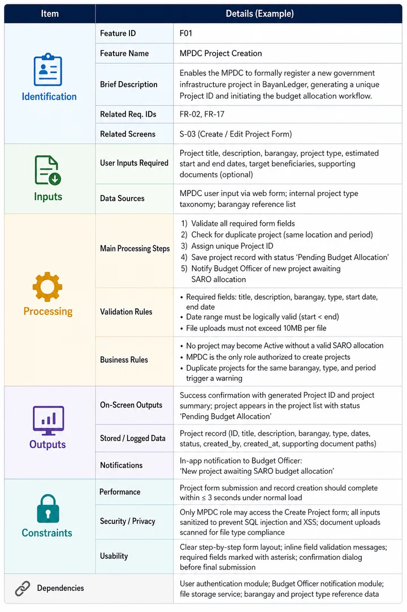
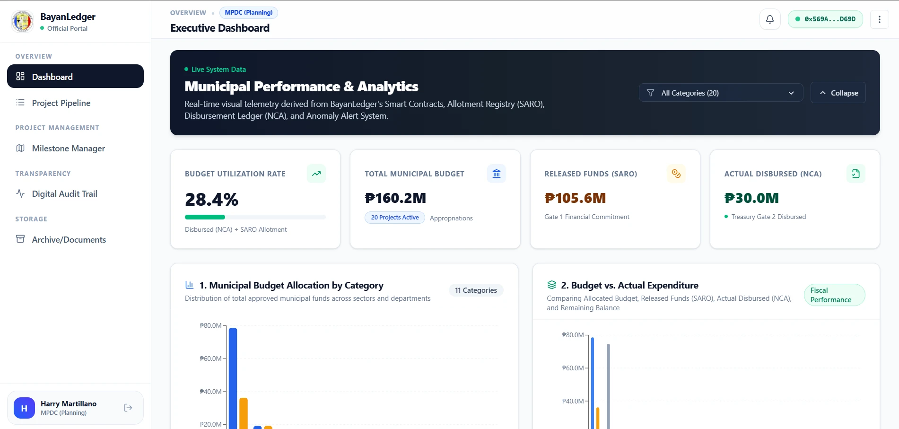
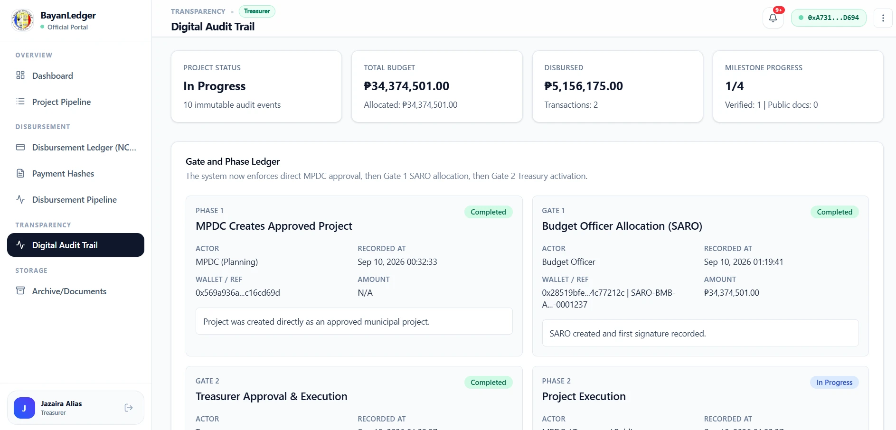
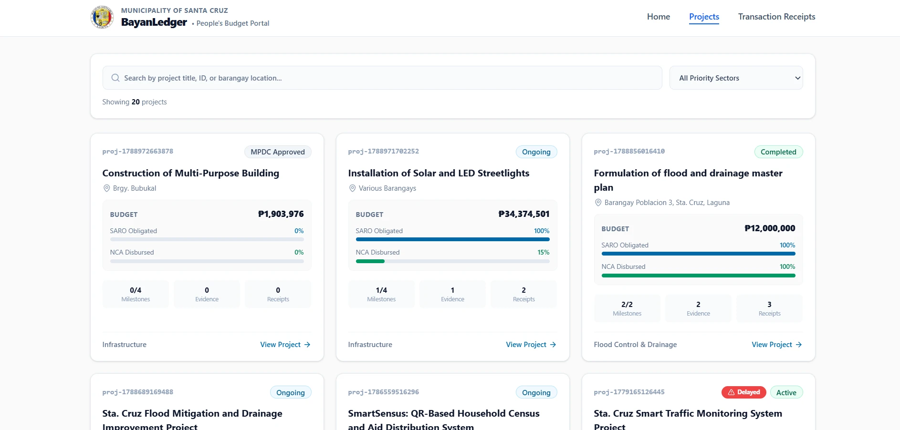
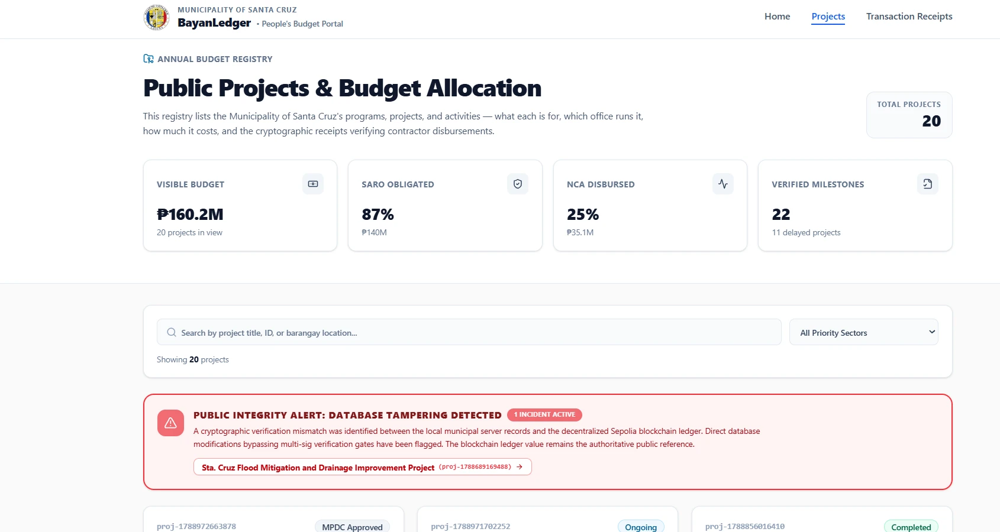
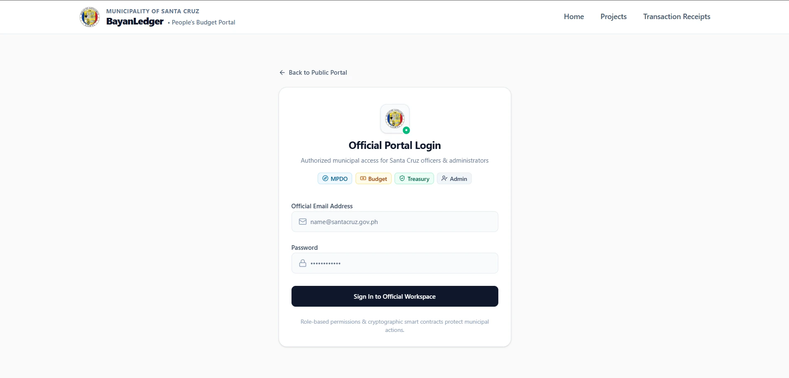

Decentralized Municipal Budget Monitoring & Participatory Governance
BayanLedger bridges grassroots local governance and blockchain technology—anchoring public infrastructure milestones, budget allocations, and contractor disbursements onto the Ethereum Sepolia testnet for the Municipality of Sta. Cruz, Laguna.
The Multi-Gate Chain of Truth
BayanLedger enforces a strict 4-step separation of duties to prevent unauthorized releases, single-point manipulation, and delayed infrastructure projects.
Project Scoping & Inception
Municipal planners encode project specifications, budget ceilings, target barangay locations, and physical milestone deliverables.
SARO Obligation & Review
The Budget Officer verifies funding appropriations, tags the Special Allotment Release Order (SARO), and executes the 1st multi-sig commitment on-chain.
Field Inspection & Proofs
Engineers and citizen observers validate on-site physical progress (25%, 50%, 75%, 100%), uploading geotagged photos hashed via SHA-256 and IPFS.
NCA Payout & Digital Seal
The Municipal Treasurer executes the final transaction, releasing the Notice of Cash Allocation (NCA) and permanently stamping the transaction with a Digital Seal.
Bridging the Transparency Gap
Comparing the existing manual paper budgeting practices of the MPDO against the decentralized architecture of BayanLedger.
Manual Paper Bottlenecks
- ✕ Absence of Real-Time Visibility: Budgets and expenditures are reconciled across fragmented paper logs, making tracking slow and tedious.
- ✕ Susceptibility to Modification: Physical files and manual spreadsheets lack tamper-detection mechanisms, creating risk of transcription error.
- ✕ Low Citizen Participation: Residents lack an open, accessible channel to see how participatory budgeting funds are allocated in their barangays.
- ✕ Delayed Auditing & Reporting: Generating Commission on Audit (COA) reports requires weeks of manual cross-referencing.
Decentralized Blockchain Governance
- ✓ Real-Time Transparency: Live municipal dashboard showing exact capital outlay, obligated SARO balances, and paid milestones.
- ✓ Cryptographic Tamper Detection: Background services continuously verify database records against Ethereum Sepolia block hashes.
- ✓ Public Citizen Portal: Mobile-responsive website where Sta. Cruz citizens inspect projects, verify proofs, and submit proposals.
- ✓ Instant Digital Audit Trails: Every transaction, sign-off, and milestone verification is immutably logged with timestamp and wallet address.
Research Questions Addressed
What is the existing operational workflow and status of budget monitoring and participatory governance in the MPDO of Sta. Cruz, Laguna?
What software architecture and blockchain modules are necessary to bridge municipal administrative workflows and citizen oversight?
How can smart contracts enforce multi-gate fund-release conditions based on verified milestone completion rather than arbitrary discretion?
How can cryptographic evidence (SHA-256 and IPFS) be integrated into a digital audit trail to detect database tampering in real time?
What is the functional performance of the system when evaluated across 225 rigorous technical test cases by IT and blockchain specialists?
To what degree do internal municipal personnel and local citizens accept the system in terms of the nine ISO/IEC 25010 software quality characteristics?
Rapid Application Development & Stack
Developed following the 4-phase Rapid Application Development (RAD) life cycle with a mixed-methods research strategy.
Requirements Planning
Key informant interview with MPDO Engr. Rosalyn M. Gutierrez, EnP, Citizen's Charter review, and DBM blockchain gap analysis.
User Design & Prototyping
Constructing ERD models, multi-sig workflow state machines, interactive wireframes, and Solidity smart contract prototypes.
Construction & Implementation
Full-stack development connecting React 19, TypeScript, Supabase PostgreSQL, Express REST APIs, and Ethereum Sepolia contracts.
Cutover & ISO Evaluation
225-case functional test execution with 15 IT experts and comprehensive ISO/IEC 25010 user evaluation with 429 participants.
Technology Stack Breakdown
Hardhat development environment, OpenZeppelin AccessControl, Ethereum Sepolia Testnet, and Ethers.js v5.
TypeScript, Tailwind CSS v4, Lucide React icons, and Recharts data visualization widgets.
REST API architecture, JWT role-based access control, Multer file handling, and automated blockchain event syncing.
Relational schema for fast querying, IPFS decentralized storage pinning, and SHA-256 evidence hashing.

Multilayered System Architecture
The architecture cleanly separates routine application queries from immutable on-chain transactions. Citizen queries and administrative interactions hit the fast PostgreSQL database, while critical state changes—milestone approvals, SARO allotments, and disbursements—are committed to the Ethereum Sepolia blockchain layer.
System Features & Modules
Click between the system modules below to explore the actual interfaces, functional requirements, and verified features of BayanLedger.

Real-Time Budget Transparency Dashboard
Provides municipal executives, MPDO planners, and citizen groups with an instant high-level overview of active municipal capital outlay, obligated funds, paid milestone disbursements, and barangay project status distributions.
- Total AIP Budget, Obligated SARO, and Disbursed NCA tiles
- Real-time synchronisation between PostgreSQL and Sepolia events
- Project category filtering (Infrastructure, Health, Disaster, Markets)
- Direct link to PDF compliance scoreboard reports for COA audit
Tamper-Proof Blockchain Budget Ledger
The on-chain transparency record where all authorized municipal expenditures are committed as verifiable Ethereum Sepolia transactions. Once written, no administrative account can delete or silently overwrite ledger records.
- Permanent cryptographic transaction hash (TxHash) commitment
- Direct block explorer verification links to Sepolia Etherscan
- Multi-signature wallet addresses tied to authorized municipal roles
- Immutable SARO allotment and NCA payment disbursement receipts
Milestone Progress & Proof-of-Work Verification
Prevents premature fund releases by enforcing physical milestone accomplishment checkpoints (25%, 50%, 75%, 100%). Each milestone requires geotagged site inspection photos and accomplishment documents before Treasury payment is unlocked.
- Contractor proof-of-work submission and deliverable checklists
- SHA-256 cryptographic hashing of photos and inspection reports
- Decentralized document pinning via IPFS metadata URI
- Two-gate verification requiring MPDC inspection and Budget sign-off

Digital Audit Trail & Tamper Detection
Continuously records all administrative activities, login sessions, role assignments, and financial transactions. The background tamper detection engine compares live database records against Sepolia block hashes to identify unauthorized alterations.
- Comprehensive logging of entity creations, edits, and sign-offs
- Automated integrity checks verifying database rows against block hashes
- Instant visual flags (Verified vs Tampered status badges)
- Exportable audit reports for Commission on Audit (COA) inspections

Public Citizen Monitoring & Proposal Portal
The public face of BayanLedger, allowing residents across the 26 barangays of Sta. Cruz, Laguna to view ongoing municipal projects, monitor budget allocations, examine verified milestones, and submit community proposals or issue reports directly.
- Fully mobile-responsive citizen interface requiring no wallet login
- Barangay-level search, status filters, and interactive maps
- Community feedback and photo submission for citizen monitoring
- Public proposal submission channel reviewed by MPDO staff

Transaction Alert & Irregularity Notification
An automated surveillance mechanism that monitors project execution and financial movements. Flags unusual conditions such as over-budget allocations, stalled milestones, and hash mismatches, alerting municipal officials immediately.
- Prioritized alerts (High, Medium, Low severity classification)
- Real-time notifications for milestone deadline breaches
- Automated warning triggers for potential budget overrun attempts
- Integrated with Firebase Cloud Messaging (FCM) for mobile delivery

Official Authentication & Role-Based Access
Protects municipal workflows by enforcing strict Role-Based Access Control (RBAC). Grants designated permissions to Admin, MPDC, Budget Officer, and Treasurer accounts, mapping JWT credentials to Ethereum wallet addresses for on-chain signing.
- Secure JWT token session management and auto-logout safeguards
- Web3 wallet address association for blockchain transaction signing
- Route-level access protection preventing unauthorized module access
- Admin dashboard for user role assignment and blockchain role grants
Evaluation Results & Testing Evidence
Quantitative evidence gathered from 429 stakeholder evaluations in Sta. Cruz, Laguna and 225 technical test cases evaluated by 15 IT and blockchain specialists.
ISO/IEC 25010 Software Quality Characteristic Ratings
Functional Testing Results Summary (15 IT & Blockchain Experts)
| Testing Category | Test Cases | Passed | Failed | Success Rate | Verification Evidence |
|---|---|---|---|---|---|
| Authentication & Access Control (RBAC) | 45 | 45 | 0 | 100% Pass | Route protection, JWT token lifecycle, and wallet binding validated across 15 experts. |
| Project & Budget Allocation Workflows | 45 | 45 | 0 | 100% Pass | Database and Web3 ledger binding executed without computation or synchronization errors. |
| Blockchain & Smart Contract Auto-Release | 45 | 45 | 0 | 100% Pass | Multi-gate release conditions and database tamper detection verified 100% accurate. |
| Dashboard Updates & Anomaly Alerts | 45 | 45 | 0 | 100% Pass | Real-time data synchronization, over-budget warnings, and audit trail logs confirmed. |
| Citizen Monitoring & Public Portal | 45 | 45 | 0 | 100% Pass | Live project browsing, community proposal submission, and issue reporting functioned as intended. |
| Total Functional Performance | 225 | 225 | 0 | 100% PASS | Zero failed test cases across all 15 independent expert evaluations. |
Research Team & Advisory Committee
College of Computer Studies, Laguna State Polytechnic University, Santa Cruz Main Campus, Santa Cruz, Laguna.
Jazaira M. Alias
BS Information Technology
Web & Mobile Application Development
Harry Anthony A. Martillano
BS Information Technology
Web & Mobile Application Development
Arianna C. Surbano
BS Information Technology
Web & Mobile Application Development
Mia V. Villarica, DIT
Associate Dean, College of Computer Studies
Laguna State Polytechnic University
Technical Contributors & Examination Panel
Submission Links & Compliance
Fulfilling the Laguna State Polytechnic University College of Computer Studies repository submission requirements.
Live Web Application
Access the deployed public portal and official transparency dashboard on Vercel.
Source Code Repository
Complete frontend, backend API, Solidity contracts, and migrations (shared with teamccs-git).
Latest Thesis Manuscript
Complete research paper, statistical chapters, literature review, and evaluation data.
Sepolia Smart Contract
Inspect compiled Solidity bytecode, event logs, and on-chain verification on Etherscan.